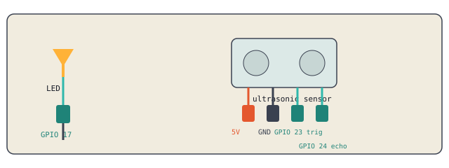

Yesterday's worksheet asked whether the sliders still worked after the master button turned everything off. In the original code, they did, which is a bug. Let's fix it.
system_on = True
def set_led1(val):
if system_on:
led1.value = int(val) / 100
def set_led2(val):
if system_on:
led2.value = int(val) / 100
def set_led3(val):
if system_on:
led3.value = int(val) / 100
troughcolor changes the color of the slider's track, not just its handle. Use it to match each slider to its LED.
tk.Scale(window, from_=0, to=100, orient='horizontal',
troughcolor='red', label='LED 1', command=set_led1).pack()
tk.Scale(window, from_=0, to=100, orient='horizontal',
troughcolor='#e6b800', label='LED 2', command=set_led2).pack()
tk.Scale(window, from_=0, to=100, orient='horizontal',
troughcolor='green', label='LED 3', command=set_led3).pack()
Keep LED 1 wired exactly as it is. Set the other LEDs, the buzzer, and the button aside, we won't need them for this next build.

Connect the sensor's 5V and GND pins.
Connect Trigger to GPIO 23 and Echo to GPIO 24.
from gpiozero import DistanceSensor sensor = DistanceSensor(echo=24, trigger=23) print(sensor.distance)
sensor.distance is measured in meters, not centimeters. Multiply by 100 to get cm, that's a very easy mistake to make.from gpiozero import DistanceSensor, LED
sensor = DistanceSensor(echo=24, trigger=23)
led = LED(17)
while True:
cm = sensor.distance * 100
if cm < 15:
led.on()
else:
led.off()
A while True loop would freeze the GUI the same way sleep() did. Use window.after() instead, the same fix from yesterday's traffic light challenge.
import tkinter as tk
from gpiozero import DistanceSensor, LED
sensor = DistanceSensor(echo=24, trigger=23)
led = LED(17)
system_on = True
window = tk.Tk()
label = tk.Label(window, text="-- cm", font=("Arial", 32))
label.pack()
def check_sensor():
if system_on:
cm = sensor.distance * 100
label.config(text=f"{cm:.1f} cm")
if cm < 15:
led.on()
else:
led.off()
window.after(200, check_sensor)
def toggle_system():
global system_on
system_on = not system_on
if not system_on:
led.off()
label.config(text="OFF")
tk.Button(window, text="On/Off", command=toggle_system).pack()
check_sensor()
window.mainloop()
Slider functions check system_on before setting any LED value
Sliders have colored troughs matching their LEDs
LED turns on when your hand is within 15cm, off otherwise
GUI label updates live with the distance in cm
Toggle button starts and stops the whole system